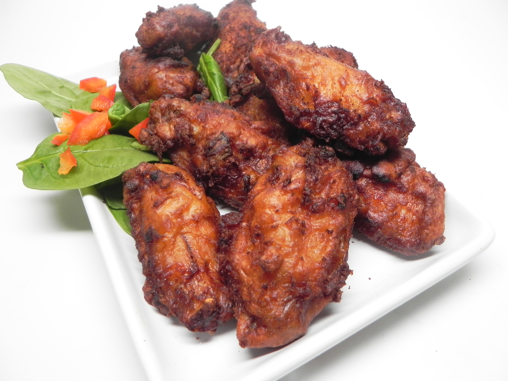

Filipino Fried Chicken

Description
I used to buy Filipino fried chicken back home in Hawaii from manapua trucks.
Ingredients
- 1 cup cornstarch
- 1/2 cup white sugar
- 1/2 cup all-purpose flour
- 2 tablespoons salt
- 1 teaspoon monosodium glutamate (such as Ajinomoto®) (Optional)
- 4 eggs, slightly beaten
- 1/2 bunch green onions, chopped
- 1/4 cup soy sauce (such as Aloha™ Shoyu)
- 10 cloves garlic, minced
- 5 pounds chicken wings
- vegetable oil for frying
Steps
- Combine cornstarch, sugar, flour, salt, and monosodium glutamate in a large bowl.
- Add eggs, green onions, soy sauce, and garlic.
- Pat chicken dry and add to the sauce.
- Cover and refrigerate until marinated, 8 hours to overnight.
- Heat oil in a deep-fryer or large saucepan to 350 degrees F (175 degrees C).
- Fry chicken in the hot oil until golden brown, 15 to 25 minutes.
- An instant-read thermometer inserted near the bone should read 165 degrees F (74 degrees C).
Back